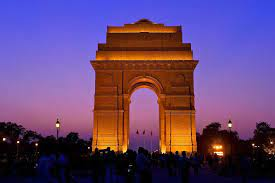
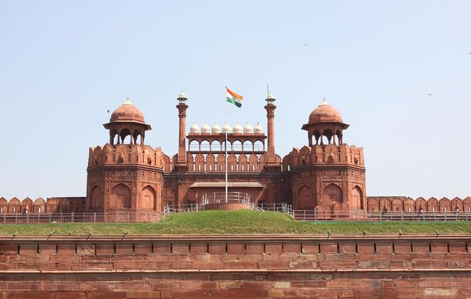
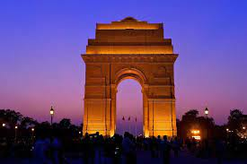
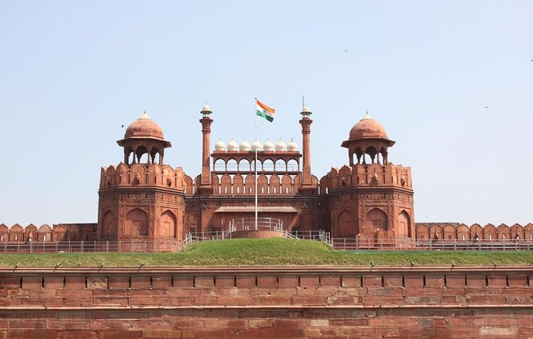
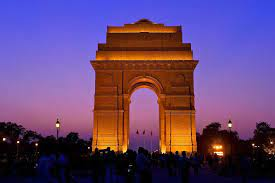
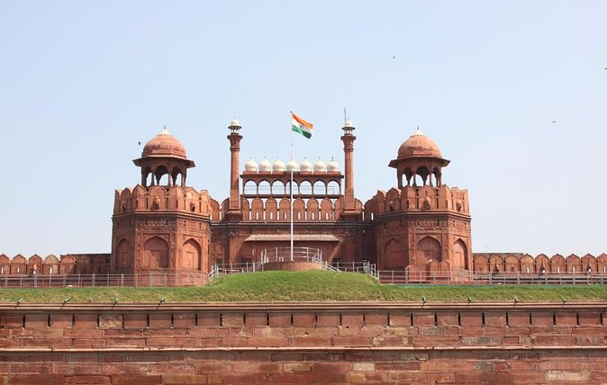
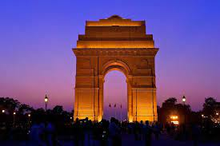
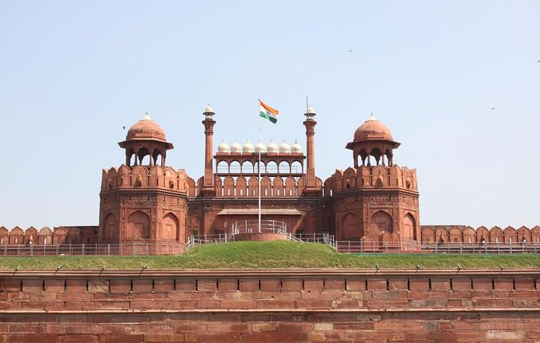

Welcome to our Website !
 







The Taj Mahal is located on the right bank of the Yamuna River in a vast Mughal garden that encompasses nearly 17 hectares, in the Agra District in Uttar Pradesh. It was built by Mughal Emperor Shah Jahan in memory of his wife Mumtaz Mahal with construction starting in 1632 AD and completed in 1648 AD, with the mosque, the guest house and the main gateway on the south, the outer courtyard and its cloisters were added subsequently and completed in 1653 AD. The existence of several historical and Quaranic inscriptions in Arabic script have facilitated setting the chronology of Taj Mahal. For its construction, masons, stone-cutters, inlayers, carvers, painters, calligraphers, dome builders and other artisans were requisitioned from the whole of the empire and also from the Central Asia and Iran. Ustad-Ahmad Lahori was the main architect of the Taj Mahal. The Taj Mahal is considered to be the greatest architectural achievement in the whole range of Indo-Islamic architecture. Its recognised architectonic beauty has a rhythmic combination of solids and voids, concave and convex and light shadow; such as arches and domes further increases the aesthetic aspect.
The India Gate was part of the work of the Imperial War Graves Commission (IWGC), which came into existence in December 1918 under the British rule for building war graves and memorials to soldiers who were killed in the First World War.[3] The foundation stone of the gate then called the All India War Memorial, was laid on 10 February 1921, at 16:30, by the visiting Duke of Connaught in a ceremony attended by Officers and Men of the British Indian Army, Imperial Service Troops, the Commander in Chief, and Chelmsford, the viceroy.[4] On the occasion, the viceroy is reported to have said, "The stirring tales of individual heroism, will live forever in the annals of this country", and that the memorial which was a tribute to the memory of heroes, "known and unknown", would inspire future generations to endure hardships with similar fortitude and "no less valor".[4] The Duke also read out a message by the King, which said, "On this spot, in the central vista of the Capital of India, there will stand a Memorial Archway, designed to keep", in the thoughts of future generations, "the glorious sacrifice of the officers and men of the British Indian Army who fought and fell". During the ceremony, the Deccan Horse, 3rd Sappers and Miners, 6th Jat Light Infantry, 34th Sikh Pioneers, 39th Garhwal Rifles, 59th Scinde Rifles (Frontier Force), 117th Mahrattas, and 5th Gurkha Rifles Ten years after the foundation stone laying ceremony, on 12 February 1931, the memorial was inaugurated by Lord Irwin, who on the occasion said "those who after us shall look upon this monument may learn in pondering its purpose something of that sacrifice and service which the names upon its walls record."[5] In the decade between the laying of foundation stone of the memorial and its inauguration, the rail-line was shifted to run along the Yamuna River, and the New Delhi Railway Station was opened in 1926.
The planning and design of the Red Fort represents a culmination of architectural development initiated in 1526 AD by the first Mughal Emperor and brought to a splendid refinement by Shah Jahan with a fusion of traditions: Islamic, Persian, Timurid and Hindu. The innovative planning arrangements and architectural style of building components as well as garden design developed in the Red Fort strongly influenced later buildings and gardens in Rajasthan, Delhi, Agra and further afield. The Red Fort has been the setting for events which have had a critical impact on its geo-cultural region. Criterion (ii): The final flourishing of Mughal architecture built upon local traditions but enlivened them with imported ideas, techniques, craftsmanship and designs to provide a fusion of Islamic, Persian, Timurid and Hindu traditions. The Red Fort demonstrates the outstanding results this achieved in planning and architecture. Criterion (iii): The innovative planning arrangements and architectural style of building components and garden design developed in the Red Fort strongly influenced later buildings and gardens in Rajasthan, Delhi, Agra and further afield. The Red Fort Complex also reflects the phase of British military occupation, introducing new buildings and functions over the earlier Mughal structures. Criterion (vi): The Red Fort has been a symbol of power since the reign of Shah Jahan, has witnessed the change in Indian history to British rule, and was the place where Indian independence was first celebrated, and is still celebrated today. The Red Fort Complex has thus been the setting of events critical to the shaping of regional identity, and which have had a wide impact on the geo-cultural region. The Red Fort Complex is a layered expression of both Mughal architecture and planning, and the later British military use of the forts. The most dramatic impacts on the integrity of the Red Fort Complex come from the change of the river into a major road, which alters the relationship of the property to its intended setting; and from the division of the Salimgarh Fort by a railway. Nevertheless the Salimgarh Fort is inextricably linked to the Red Fort in use and later history. The integrity of the Salimgarh Fort can only be seen in terms of its value as part of the overall Red Fort Complex. The authenticity of the Mughal and British buildings in the Red Fort Complex is established, although more work is needed to establish the veracity of the current garden layout. In the specific case of the Salimgarh Fort, the authenticity of the Mughal period is related to knowledge of its use and associations, and of the built structures dating from the British period.